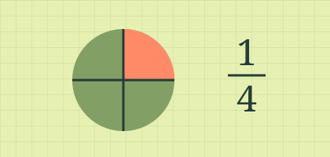
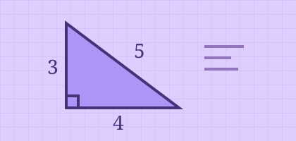
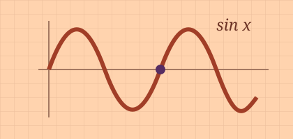

Повышение успеваемости
Для тех, кто теряется в дробях, процентах и уравнениях. На курсе учимся читать условие, записывать его на языке математики и проверять свой ответ.
Программа курса →У каждой программы своя цель. На школьном курсе разбираемся с темами, которые вызывают трудности на уроках. На курсах ОГЭ и ЕГЭ учимся применять эти знания в экзаменационных заданиях.
Посмотреть курсы ↓
Для тех, кто теряется в дробях, процентах и уравнениях. На курсе учимся читать условие, записывать его на языке математики и проверять свой ответ.
Программа курса →
Для девятиклассников. Повторяем алгебру и геометрию, читаем графики и разбираем задачи, где нужно показать ход решения.
Программа курса →
Для старшеклассников. Отрабатываем вероятность, уравнения и функции. Для профильного уровня подробнее разбираем тригонометрию и отбор корней.
Программа курса →В восьмом классе труднее всего давались квадратные уравнения и графики. Ученик вернулся к основам и стал увереннее писать контрольные. Вместо привычных троек появились четвёрки, иногда и пятёрки.
Читать отзыв →Девятиклассник занимался два раза в неделю. На уроках разбирал, почему работает каждый способ решения, а на пробниках учился распределять время. По словам мамы, ОГЭ он сдал успешно.
Читать отзыв →В начале подготовки выпускницу пугали параметры и стереометрия. Разбор ошибок после пробников помог ей увереннее решать первую часть и приступить ко второй.
Читать отзыв →